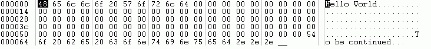

Writing and reading files
To read and write files, RapidBATCH provides you four versatile, easy to use instructions and functions which can be used for text- as well as binary-oriented file operations.
To write and save data to text files, RapidBATCH provides the WRITEFILE-instruction. WRITEFILE expects as parameters a filename and the value that should be written, where each operation that is done using WRITEFILE is one line in a text file.
A simple case study is the following line of code:
writefile 'hello.txt', 'This is a text we write into a text file.'
WRITEFILE appends the content of the file each time it is called automatically, that means the value that is written to the file is automatically appended to the file's end. A line break is automatically done behind the value that is written each time WRITEFILE is called. If the file WRITEFILE should write is not existing, it is automatically created, and the value will be written to the first line of the file, at the beginning.
When we run the following code...
writefile 'test.txt', 'The quick brown fox'
writefile 'test.txt', 'jumps over'
writefile 'test.txt', 'the lazy dog.'
...TEST.TXT will get the content:
The quick brown fox
jumps over
the lazy dog.
To read out the file again, RapidBATCH is providing the function READFILE, that you surely already learned to know in the previous chapters shortly. READFILE is likewise used to read text files, because it reads a file line by line. Parameters are the filename of the file that should be opened and read, and the line-number that should be read and returned.
The following script tells us the first line of the evenly created file TEST.TXT.
readfile [line] = 'test.txt', '1'
echo 'The first line of TEST.TXT is: ' # [line]
To read the whole file now line-by-line, READFILE has to be called in a loop, where a counting variable is incremented in each loop. Here, we use the variable [i] as line counter. If a line number is specified at READFILE that does not exist, the value "EOF" is returned as value, meaning "End Of File". Additionally, [errorcode] (that always is set to '0' if the line was read successfully) is set to '-1' if the file's end is reached.
[i] = '0'
repeat
rem increment [i] to 1
[i] + '1'
rem read line number [i]
readfile [line] = 'test.txt', [i]
rem display the read line
echo 'Content of line ' # [i] # ' is: ' # [line]
until [line] = 'EOF' & [errorcode] = '-1'
The READFILE-function is also able to read a file in one go, that means it can read a whole text file and returns it to a variable. This possibility is given when the value '0' (or a lower value than '0') is specified as the line number parameter to READFILE. In such a case, the whole file's content is returned.
readfile [file] = 'test.txt', '0'
echo 'Content of TEST.TXT:' # [new_line] # [new_line] # [file]
The above script does also use the pre-declared variable [new_line] to insert two line breaks within the ECHO-message, before displaying the content of the file.
Both READFILE and WRITEFILE assign values to the variable [errorcode]. [errorcode] gets '-1' if a file could not be created at WRITEFILE or if the disk is full. '-1' is assigned to [errorcode] at READFILE if the file could not be opend or EOF has been reached. If all is fine and no errors occured, [errorcode] gets '0'.
RapidBATCH is also able to work on files using the binary method, since version 5.0. For such cases, the instruction PUTFILE and the function GETFILE is provided for writing and reading files in binary-method. As binary files, all files that are no plain text files, are defined. Even Office-Files like DOC or XLS are no plain text files, it are even binary files!
But however, in the next examples, we will write and read text files again, but now on a binary basis. As a matter of course, it is also possible to write and read any desired character, including control characters and characters from the extended ASCII-character table to or from a file.
To write a file (which can also be a text file!) in binary mode, we use the already mentioned PUTFILE-instruction. PUTFILE can only write to existing files. If the file does not exist, it must be created explicitly using NEWFILE.The following example saves the text "Hello World" in binary to the file BINARY.TXT. Next to the filename of the file PUTFILE should write to, it expects as second parameter the byte-offset (as offset, a position of bytes from the beginning of the file is meaned) where the writing operation should start within the file, and as third parameter a list of ASCII-character codes that should be written. This list contains only the numerical ASCII codes of each character that should be written, not the character itself. Each character has to be seperated from the others using the RapidBATCH default list separator defined in the pre-declared variable [std_sep]. By default, this is the pipe-character "|" as it is used in the example below.
newfile 'binary.txt'
putfile 'binary.txt', '1', '72|101|108|108|111|32|87|111|114|108|100'
open 'binary.txt'
In this case, we inserted 11 bytes to the file, where one byte (8 bits) is one ASCII-character.Now, it is also possible to continue writing the file directly at another byte-offset, let's use offset 100:
rem text: "To be continued..."
[text] = '84|111|32|98|101|32|99|111|110|116|105|110|117|101|100|46|46|46'
rem saving the text to offset 100 in the file "binary.txt"
putfile 'binary.txt', '100', [text]
Sure, these lists of ASCII character code-values are not that easy to encode, but please remind that we're currently programming on the core RapidBATCH language without any customization. To use the binary operations more easier, it is recommended to write functions and procedures converting plain texts to ASCII lists, which can be adapted from the above converter script.
When we run the above script next to the first one, the file BINARY.TXT looks like the following when it is viewed using a hex-editor:

Content of BINARY.TXT using a hex-editor.
Obviously, the second writing operation, beginning at hex-offset 64 (which is offset 100 in decimal), can be recognized. The area between our first "Hello World" and our second text, "To be continued...", is filled with ASCII-code 0.Please note, that PUTFILE does not do an append to a file like WRITEFILE, it stores its value to the specified offset, and overwrites existing values without any warning.
Reading a file in binary-mode is nearly the same way like writing it, using the GETFILE-function. GETFILE expects the path of the file that should be read, the starting-offset where the reading operation in the file should begin and a number of bytes, that should be read. Return value is, equivalently to the third parameter of PUTFILE, a list of ASCII character-codes, where each ASCII-code is seperated by the RapidBATCH default separator.
rem read the data from the file
getfile [data] = 'binary.txt', '100' + '6', '9'
echo 'Read list of ascii-codes: ' # [data]
rem convert ascii-codes to ascii-characters
[i] = '0'
repeat
[i] + '1'
gettok [char] = [data], [std_sep], [i]
if [char] ! ''
getchr [char] = [char]
[plain] # [char]
endif
until [char] = ''
rem show the plain text
echo 'Plain text: ' # [plain]
end
Here, we read "continued" only by specifing the reading operation start offset to 106 because at offset 106, the word "continued" begins, and tell GETFILE, that 9 bytes from offset 106 should be read. The result is the string we wanted to get from the file!
If the offset values specified at GETFILE are huger that the file's size, an empty string or the characters until the file's end are returned by the function.
Why only text files in these examples?
Surely you asked yourself why we only write text files in binary mode in the above examples. For sure, only writing text files is not the sense and purpose of binary file operations, but I think that writing text files is a great lesson to get a feeling for writing files on binary basis. It is easier to write plain texts binary than writing or reading any cryptic characters to or from a file. PUTFILE and GETFILE lets you fully control a file, every information can be written and read. I guarantee you that you will use WRITEFILE and READFILE for the most file access operations, not only because they are easier to handle, but if you reach their limits, you can continue by using PUTFILE and GETFILE.
Copyright © 2000-2006 by J.M.K S.F. Software Technologies, Jan Max Meyer
All rights reserved.